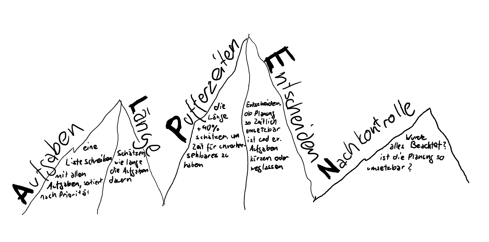

1) Ja, ich habe schon Tagesplanungen erstellt, aber nur gedanklich und nicht schriftlich. Ich mache mir
meistens eine Planung im Kopf fürs Wochenende. Das Problem an der Sache ist, dass meine Eltern mir gerne
mit irgend einem Blödsinn einen Strich durch die Rechnung machen.
Tagesplanung mit der ALPEN-Methode für den kommenden Mittwoch (25.5.22)

A für Aufgaben
- Arbeiten
- Motorrad holen/Kollege besuchen (geht in einem)
- E-Portfolio bearbeiten
- Fahrtweg
L für Länge schätzen
- Arbeiten: 8h 45
- Motorrad holen/ Kollegen besuchen: 4h
- E-Portfolio bearbeiten: 2h
- Fahrtweg: 2h
P für Puffer einplanen
- Arbeiten (fix): 8.75
- Motorrad holen/ Kollegen besuchen: 5.6h
- E-Portfolio bearbeiten: 2.8h
- Fahrtweg (fix): 2h
Insgesamt: 19.15h, mehr als ein Tag bietet
E für Entscheiden
Zwei der Aufgaben können und müssen gekürzt werden:
- Motorrad holen/ Kollegen besuchen: 3h
- E-Portfolio bearbeiten: 1h
Insgesamt: 14.75, würde passen
N für Nachkontrolle
-
Zeit fürs Essen wurde bei der Arbeit und bei meinem Kollegen eingerechnet. Somit wurde alles
beachtet und ist so umsetzbar.
2) Grossartig erfahrungen gemacht habe ich mit der ALPEN-Methode noch nicht, denn ich habe sie in diesem
Auftrag zum ersten Mal verwendet.
Ich kann nur sagen, dass sich eine Tagesplanung für mich nicht Lohnt, da erstens das Verhältnis zwischen
Aufwand und Ertrag nicht stimmt, und
zweitens trifft meist alles anders ein, als ich es geplant hatte. Um meinen Tag zu organisieren verwende
ich die Kalender App auf meinem Handy,
um mir Termine oder ähnliches einzutragen und Tasks in Planner und To Do, welches im Teams integriert
ist.